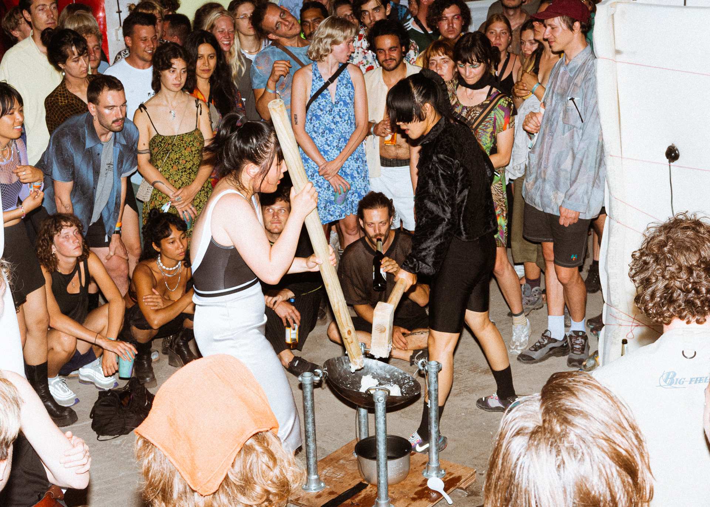
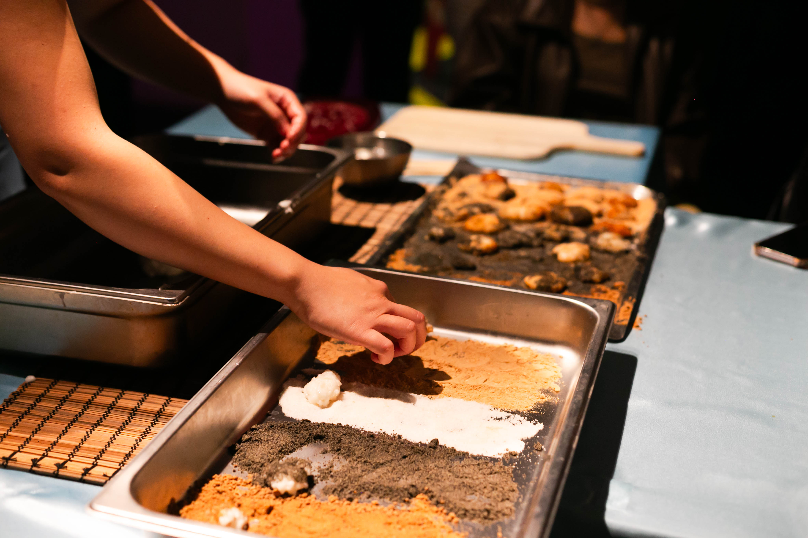
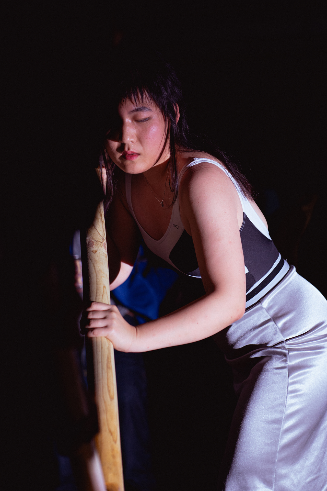
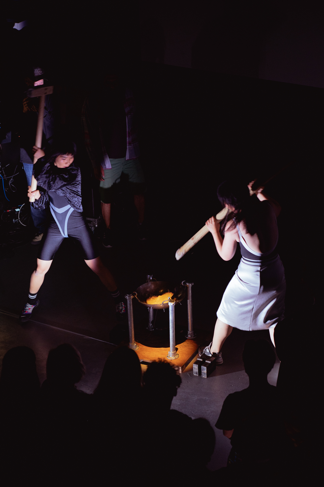
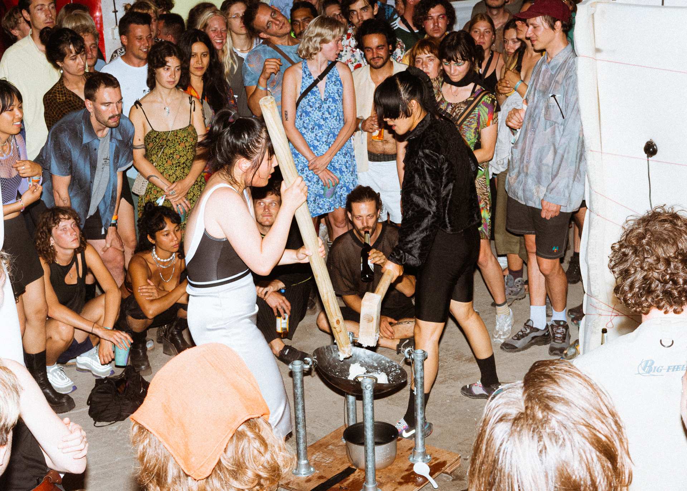
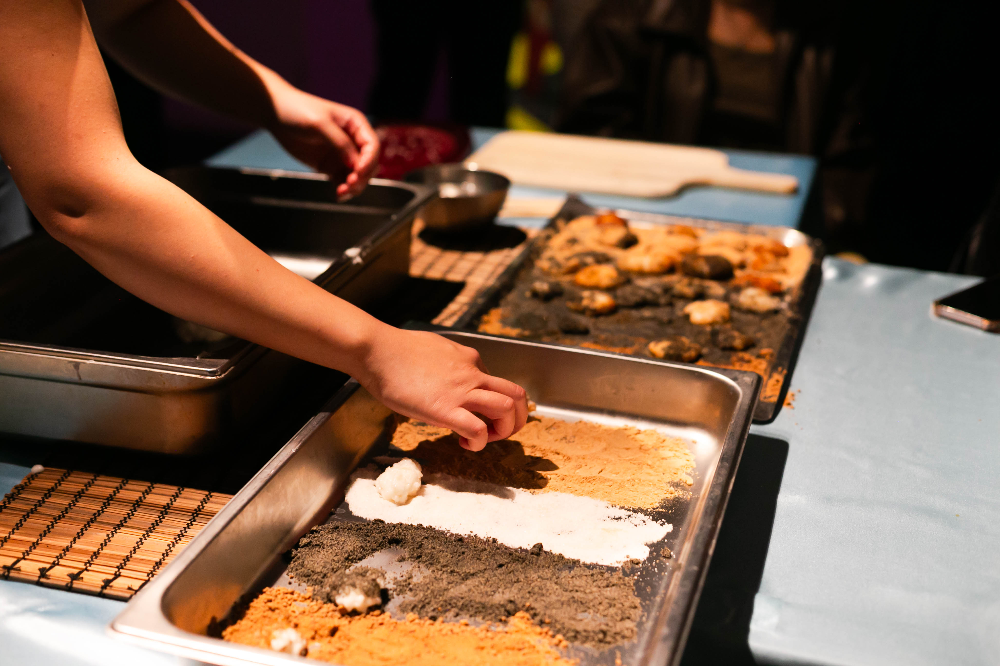
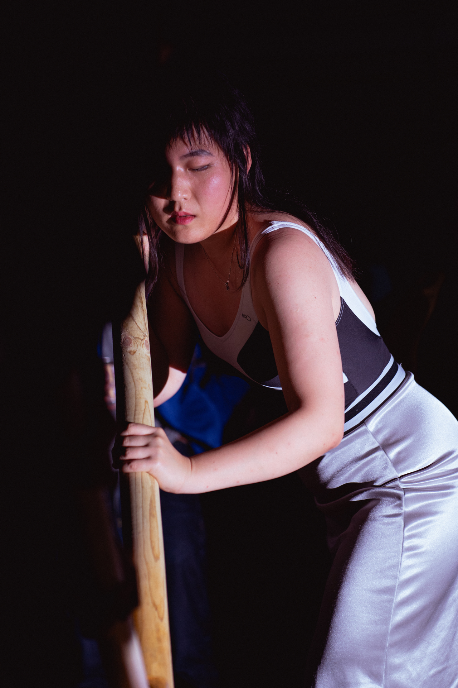
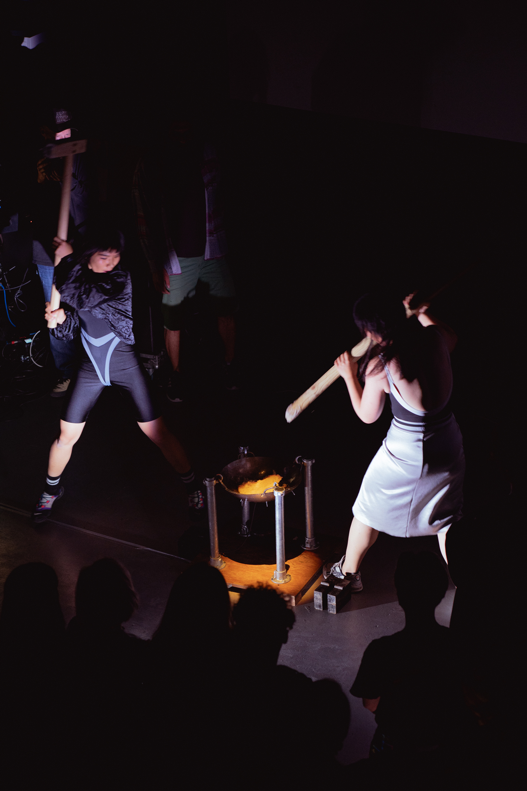

Forceful Catering
Inspired by the traditional Chinese folklores and rice pounding work songs, this project tries to expand the rice pounding song to contain new narratives reflecting our current urgencies: can a woman’s body become, contrary to a recipient, a giver of forces and penetration? What if fierce acts don’t direct to violence and harm, but a process leading to nourishment and care? How does the transformation of rice translate the cycle and entanglement of birth and death, fertility and decay?
The performance brings out a clubbing experience and a catering service to the audience. “Forceful Catering” thrives on feeding the ones who treasure beats and intimacy.
The work was titled "Pound it!" and was developed during Summer Session residency 2022, supported by V2_Lab for the Unstable Media. For this version, I collaborated with Rachwill Breidel on the music and Tingyi Jiang on the performance.
"Forceful Catering" is evolved from "Pound it!" and is a project develped during WORM x Amarte residency 2023. For this version, I collaborated with 10_r3n on the music and Marie Komatsu on the wood installation.
photo credits:
image 1~4: Helena Roig
image 5: Louis Jaccoud
image 7~9: Lavinia Xausa
presentation:
Traumburg Festival (DE)
Test_Lab: Summer Session, V2_ (NL)
FIBER Festival (NL)
AFFECT, final presentation WORM x Amarte Residency, WORM (NL)
FeverTraumburg, Poing Clubnight (NL)
The Women Gather, Het Nieuwe Instituut (NL)
On Point Of Climax, iii (NL)
Amarte Wonderland, Theater De Krakeling Amsterdam (NL)


 






